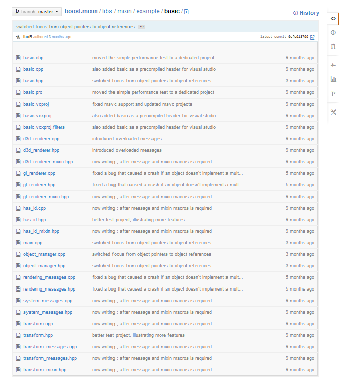

Boost.Mixin
Динамично композиране и мутиране на типове в С++
Автор Борислав Станимиров
Какво става тук?
- Представяне на библиотека - Boost.Mixin
- Времето е недостатъчно за всичко
- Повече "какво"
- По-малко "защо"
- ...но не нула "защо"
Какво трябва да знаете?
- Поне малко С++
- Няма да се занимаваме с имплементация
- Обектно-ориентирано програмиране
Boost
- Какво е Boost?
- Boost.Mixin още не е там
- Ревю до края на 2013
- Част от Boost до края на 2014? 201_?
- Все пак библиотеката е използваема
Mixin (библиотеката)
- За какво служи?
- Организация на сложни обекти
- Ама наистина сложни
- В различни подсистеми
- Чрез позволяването на динамични типове
- Може да не се справя със защитаването ѝ, но...
- История.
- Masthead Studios и Захари Караджов. Идея. Интерфейс
- Аз. Пренаписване. Подобряване?
- Epic Devs
- Има 15☆ в GitHub
- Не е просто използваема, но и използвана
Какво точно прави?
- Няма прости примери
- Или ще са твърде глупави
- ...или твърде дълги
"Прост" пример
{kind=link}
Основни функции
- Композиране
- Композиране vs Наследяване
- Редовен проблем в ООП
- Статичен полиморфизъм
- Модифициране (Мутация)
- Динамичен полиморфизъм
Не-прост пример
Композиране
- Имаме класовете:
apple_productmp3_playerheadphones_player
- Сглобяваме си iPod
Мутиране
Подменяме mp3_player с casette_player и получаваме iWalkman
Или...
подменяме apple_product с microsoft_product и получаваме Zune
Zune. Zune. Zune.
Интерфейси
Не работи.
Тотално.
:(
Oppan C++ Style
- Mножествено наследяване
- Силно типизиран език
- Duck type език
Do you want to know more?
РТФМ
Край
Въпроси?
От Борислав Станимиров / ibob.github.io
Boost.Mixin е тук: github.com/iboB/boost.mixin
Презентацията е лицензирана с Creative Commons Признание 3.0